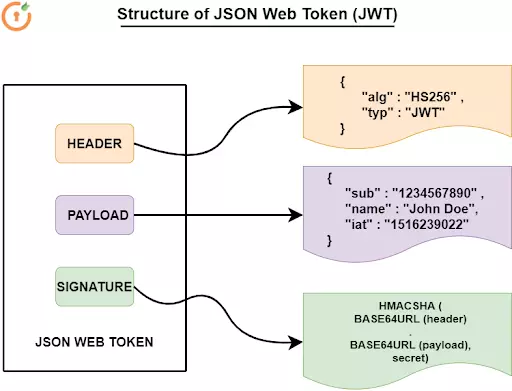

Authentication and authorization

- Username-Password scheme
- OAuth (Open Authorization)
- OpenID Connect
- SAML (Security Assertion Markup Language)
- Multi-factor Authentication (MFA)
- Biometric Authentication
- Client Certificate Authentication
Sessions
The user submits login and password
The server verifies
The server creates a session
The client sends the session identifier
The server validates the session identifier
Tokens
The user submits login and password
The server verifies
The server generates and signs a token
The token sent to the client
The server verifies the token information
{
"accessToken": "eyJhbGciOiJIUzI1Ni
.eyJzdWIiOiIxMjM0NTY3ODkwIiwibmFtZS
.8Jf3bJQz5_QMIz20io5LIVdRHzO",
"expiresIn": 900,
"tokenType": "Bearer"
}
Authorization: Bearer eyJhbGciOiJIUzI1Ni
.eyJzdWIiOiIxMjM0NTY3ODkwIiwibmFtZS
.8Jf3bJQz5_QMIz20io5LIVdRHzO
JWT
header, payload, signature
- Username-Password scheme
- OAuth (Open Authorization)
- OpenID Connect
- SAML (Security Assertion Markup Language)
- Multi-factor Authentication (MFA)
- Biometric Authentication
- Client Certificate Authentication
OAuth
OAuth 1.0 (digital signatures): Authentication + Authorization
OAuth 2.0 (tokens): only Authorization